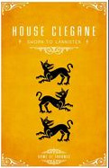
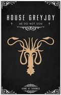
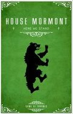
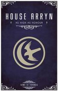

Characters
Tyrion Lannister
Tyrion Lannister convalesces from the wound he suffered during the Battle of the Blackwater. He is informed by a gloating Grand Maester Pycelle that he is no longer Acting Hand of the King, as his father Tywin Lannister has returned to the city and will take over his duties as Hand. Varys visits and tells him that Bronn has been relieved of his command of the gold cloaks and his hill tribesmen have gone home with their plunder; Tyrion has lost all of his power. Varys thanks Tyrion for his part in defending the city, noting that no one else will do so. Shae urges Tyrion to leave with her for Pentos, but he refuses.
King Joffrey
King Joffrey rewards those who served him well in the battle. Lord Tywin Lannister is officially named Hand of the King and Savior of the City. Littlefinger is awarded Harrenhal for brokering the alliance between Houses Lannister and Tyrell. Loras Tyrell asks that Joffrey wed his sister Margaery to unite their houses. Queen Cersei Lannister and Pycelle make a show of convincing Joffrey to set aside his betrothal to Sansa Stark, given the treachery of House Stark. Joffrey plays along and agrees to wed Margaery. In private, Sansa is overjoyed to be free, until Littlefinger points out that it will not stop Joffrey from tormenting her; however, he does assure her that he will help her escape, for the sake of her mother.
Ser Jorah Mormont
Ser Jorah Mormont is a major character in the first, second, third, fourth and fifth seasons. He is played by starring cast member Iain Glen, and debuts in the series premiere. Ser Jorah is an exiled Northern lord living in Essos. He has sworn fealty to his fellow exile Daenerys Targaryen and helps her adapt to life as a Khaleesi of the Dothraki. Jorah Mormont is the son of Jeor Mormont of House Mormont, the Lords of Bear Island and vassals of House Stark in the North. Jorah had a distinguished early career, and participating in the Siege of Pyke during the Greyjoy Rebellion, for which he was knighted by King Robert Baratheon. His father later voluntarily joined the Night's Watch, leaving Jorah as Lord of Bear Island and head of House Mormont.
Houses
| House Lannister | House Ciegane | House Greyjoy | House Mormont | House Arryn |
|---|---|---|---|---|
|  |  |  |  |